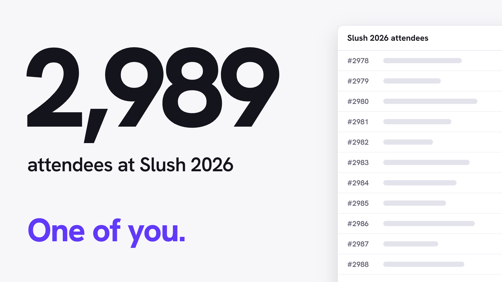
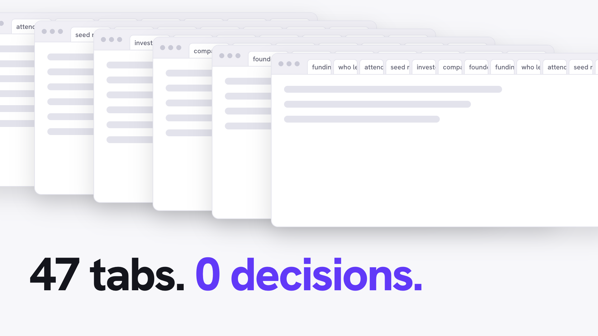
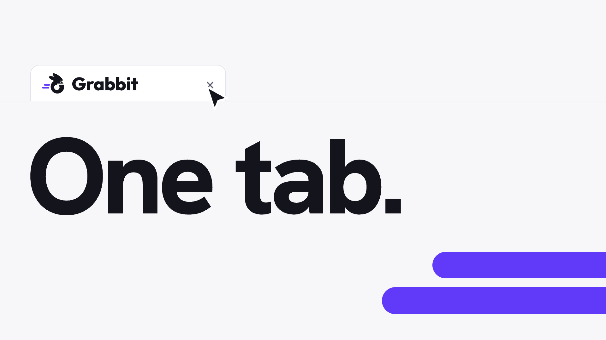
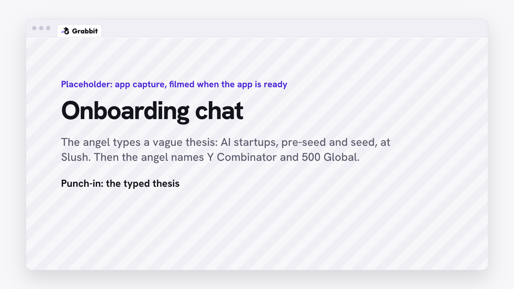
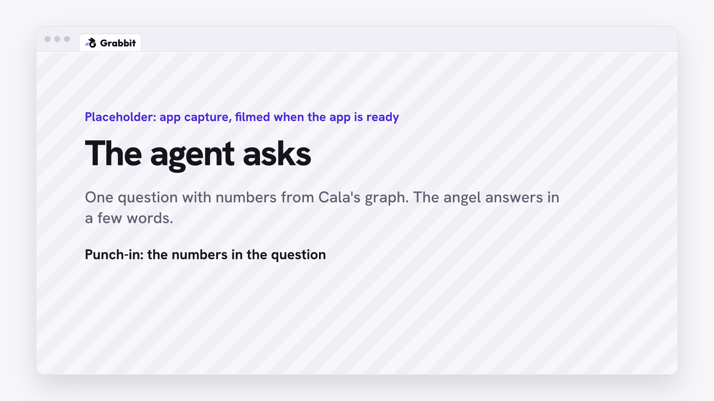
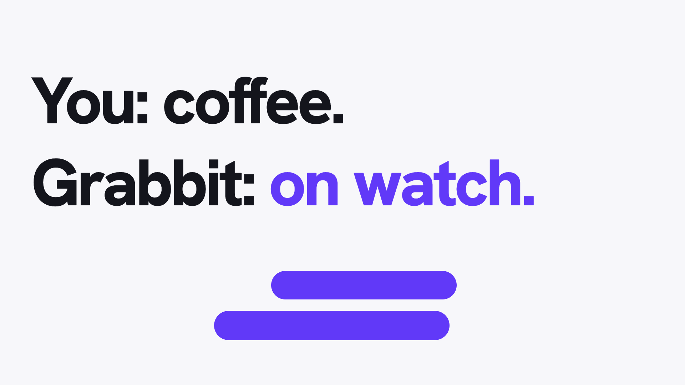
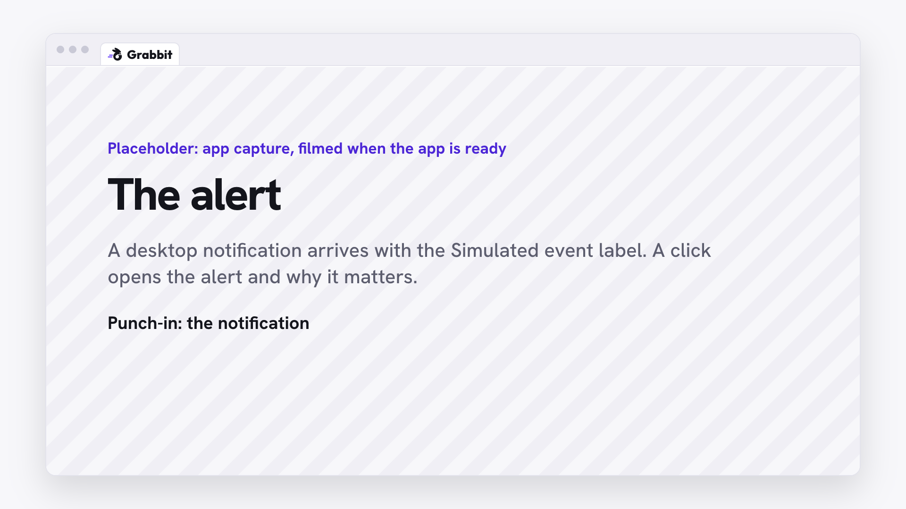
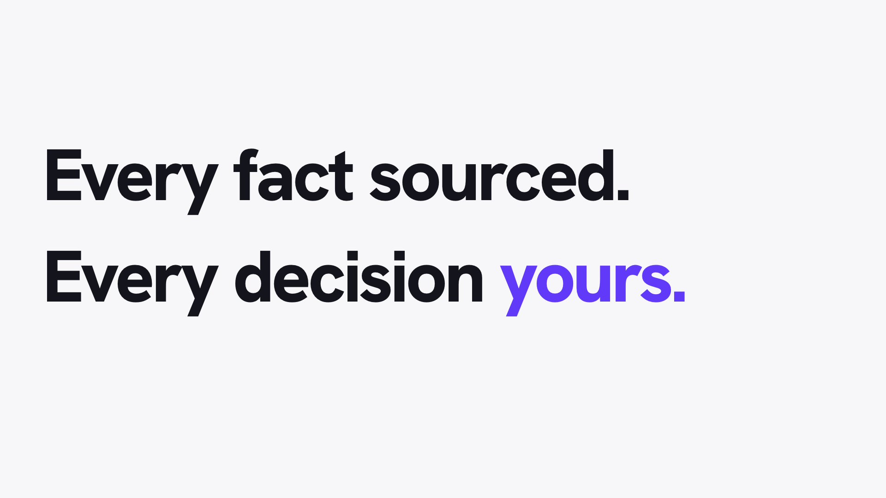

Voice: Slush. Two thousand nine hundred eighty-nine attendees. You are one angel, with one calendar and no analyst.
Reads: the counter lands on 2,989 (0.3-3.0s); "One of you." lands (4.5-7.0s)
Sound: bed enters low; soft ticks while the counter runs; pop on 2,989

Voice: You open tabs. You read old databases. You get tired before you decide anything.
Reads: windows pile up (0-5.0s); "47 tabs. 0 decisions." lands (5.0-8.0s)
Sound: bed thins out; one whoosh for each new window, three takes in rotation

Voice: Close them.
Reads: the cursor clicks, the speed lines sweep the tabs away (0-1.5s); "One tab." lands (1.5-5.0s)
Sound: click on the cursor; whoosh on the sweep; the bed opens here

Voice: Tell Grabbit what you want. A vague thesis is enough. Name two investors you trust.
Reads: the typed thesis (2-9s); the two reference investors (10-17s)
Sound: bed steady; soft key ticks while the angel types

Voice: Grabbit does not only answer. It asks, and each question has real numbers from Cala's graph.
Reads: the question from the agent (1-8s); the numbers in it, after the punch-in (8-14s)
Sound: bed steady; pop when the question arrives

Voice: Here is your Slush shortlist. Who led each round. Which of your trusted investors joined. Each fact shows its source.
Reads: the report opens (0-3s); one startup: lead, co-investors, trust badges (3-10s)
Sound: bed lifts as the report opens

Voice: Too long? Say so. The agent rewrites its own instructions, and the report changes in front of you.
Reads: "shorter, co-investors first" (0-3s); the change marks on the report (3-8s); one source opens (8-10s)
Sound: key ticks on the correction; riser into the report change, the one impact of the film

Voice: Now go.
Reads: "You: coffee." (0.5-4s); "Grabbit: on watch." (4-10s)
Sound: bed drops to near silence

Voice: Grabbit keeps watching. A startup on your shortlist announces a seed round, led by an investor you trust. You know why it matters before the others read the news.
Reads: the notification with its Simulated event label (1-6s); why it matters, in the chat (7-15s)
Sound: pop on the notification; click when the angel opens it; bed returns

Voice: Grabbit does not tell you what to buy. It gives you your time back, so you spend it on the decision.
Reads: "Every fact sourced." (0.5-5s); "Every decision yours." (5-12s)
Sound: bed full; no effects

Voice: Grabbit. Built on Cala.
Reads: the speed lines carry the mark in, the wordmark wipes in (0-1.5s); "Built on Cala" and the demo link hold (1.5-4s)
Sound: whoosh on the speed lines; bed ends on a bar line under the card